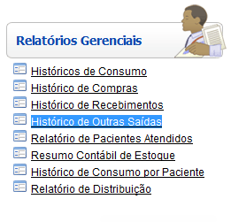
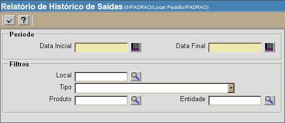

Histórico de Outras Saídas [ Voltar ]
Utilize esta tela para gerar um relatório contendo o
histórico
de saídas por descarte, produtos com validade vencida e outras. O
relatório pode ser
específico para um período, local, motivo, produto ou entidade.
O formulário"Histórico de outras saídas"
encontra-se dentro do menu "Relatórios
Gerenciais".

Ao clicar no formulário, a seguinte tela
será exibida:

Para gerar o
relatório, siga os passos abaixo:
1º Passo:
configure o período desejado e demais filtros do relatório. Os campos em
amarelo são obrigatórios.
- Data inicial/final.
Informe as datas inicial e final para o relatório.
- Local.
Se desejar gerar o relatório para um local específico, informe-o aqui.
- Tipo.
Você pode selecionar aqui um determinado tipo de saída:
- Descarte
de produtos vencidos;
- Perda
por quebra/avaria;
- Prazo
de validade vencido;
- Produto
danificado;
- Quant.
recebida não é igual à quant. solicitada;
- Demanda;
- Investimento;
- Manutenção;
- Webservice;
- Outros;
e
- Estornar
recebimento.
- Produto. Se
desejar gerar o relatório para um produto específico, informe-o aqui.
- Entidade. Se
desejar gerar o relatório para uma entidade específica, informe-a aqui.
2º
Passo: clique no botão para processar
o histórico. para processar
o histórico.
Para imprimir o relatório, clique no botão  [Imprimir]
do navegador. Para voltar à tela anterior, clique em [Imprimir]
do navegador. Para voltar à tela anterior, clique em  [Voltar]. [Voltar].
Ir
para o topo da página
|